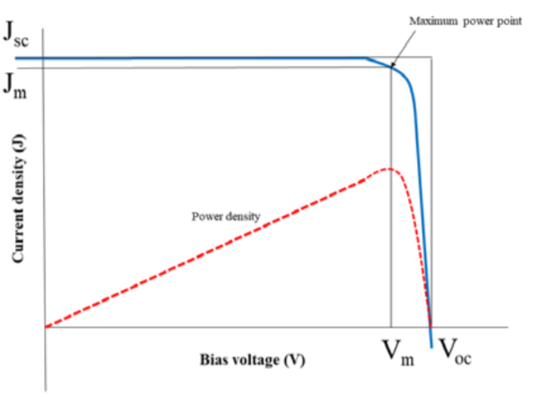

Theory
Solid state devices, p-n junction solar cells are basically energy converters, which convert solar energy (or any other luminous source such as electrical bulb) into electrical energy through three-steps.
These steps are:
- Generation of carrier pairs (electron-hole pairs)
- Separation, and,
- Collection of separated charge carriers
When solar light hits a solar cell, it generates charge carriers (electron-hole pairs), which move towards the junction through the process of diffusion. The barrier will separate the positive and negative charge carriers at the junction. When an electric field is applied, the minority charge carriers, the electrons, move towards the n-region from the p-region (and vice-versa for holes). Therefore, an accumulation of charge occurs (increased no of holes on the p-side and electrons on the n-side) on the two extremities of the solar cell which generates emf, known as photo emf of the solar cell.
The photo emf, (open circuit voltage) is proportional to the illumination (mW/cm2 or lumen/cm2) and the size of the illumination area. When an external circuit is connected to the solar cell, the minority charge carriers reach their original sides and thereby cause an electric current to flow through the circuit. Thus, the solar cell behaves as battery with negative n-side and positive p-side. The photo emf can be measured using a voltmeter. The conversion of solar energy to electrical energy is known as photovoltaic effect; hence, solar cell is also called a photovoltaic cell.